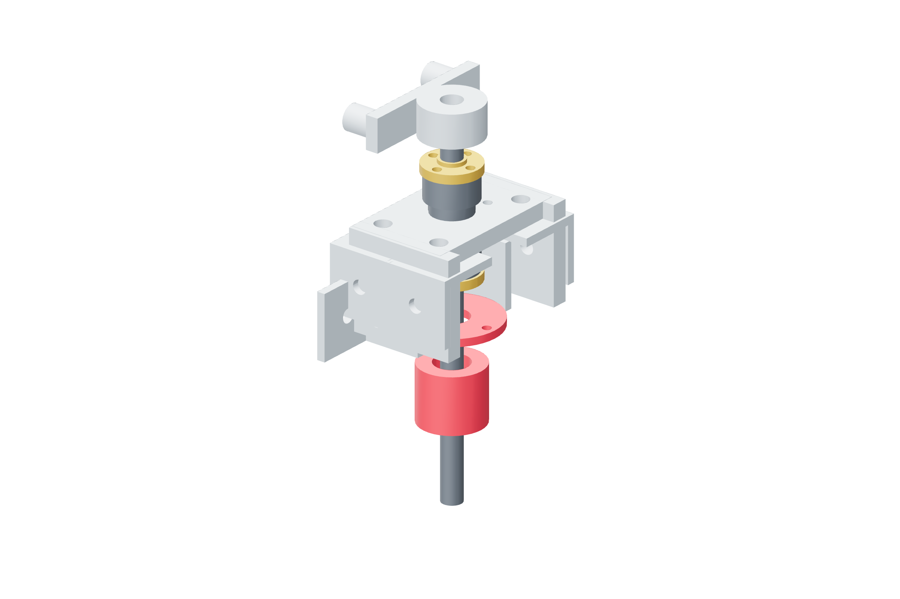

Retention / metal assembly87 / 179
Fit three independent friction retainers
Z, pitch and roll retain gravity through a dry steel washer on a rotating brass flange. The retained screw remains connected when its belt or motor power is absent.
AddPer retained axis: friction-washer · friction-spring · friction-spring-seat · 4 M6 × 80 posts · two M3 × 50 guide pins
Tools / setupPower unplugged · wrenches · rigid load support

- Drill two Ø3.4 mm guide holes on 30 mm pitch in each purchased steel washer using its drilling projection; preserve the contact face.
- Keep the carried frame supported and its belt released. Verify cured nut/screw witness marks before loading the flange.
- Clean the contact annulus and steel washer; keep lubricant away from this dry friction pair.
- Place the washer and axial spring in their CAD order; start the metal spring seat on all four posts.
- Fit the two anti-rotation guide pins. The washer must slide and tilt freely while its pins prevent rotation.
Ready when
The spring bears centrally on the dry washer, which overlaps the brass annulus and follows runout without binding its guide pins. Off-center spring force, an oily contact or trapped washer fails retention assembly. Correct the actual metal contact path before measuring torque.